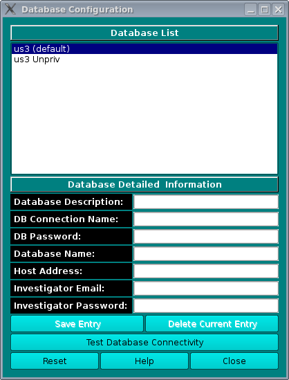

Manual
Manual
Manual
Manual
Note: Whenever UltraScan needs to use a database entry, it needs the user's master password. The first time it is needed, it will prompt for it and save it in memory, but not on disk storage. When needed again, UltraScan uses the stored password. Before this can be done, the master password needs to be set up and a cryptographic hash of the password stored. Use the Master Password panel, accessed form the main configuration panel, to set up or change the master password.

The database configuration panel allows you to configure the connection to the database that holds your experimental data. Here you can enter the name of the database, the username you use to connect to the database engine as well as your database login password, and finally the name of the host on which the database engine is running. UltraScan offers the option to configure multiple databases for facilities that may use multiple databases from different sites. The currently selected database is listed with the "(default)" tag. To change the default database, simply double-click on the desired database in the "Database List" section to select the database that needs to be set as default. Now click on the Save as Default button. The name in the database list with the "(default)" tag will then reflect the new default database.
When Reset is selected, the fields are cleared and a new entry can be entered. The Test DB Connectivity button will try to connect to the database in the Detailed Information fields to provide a confimation that the data is correct.
To delete an entry, select it and click on Delete Current Entry.